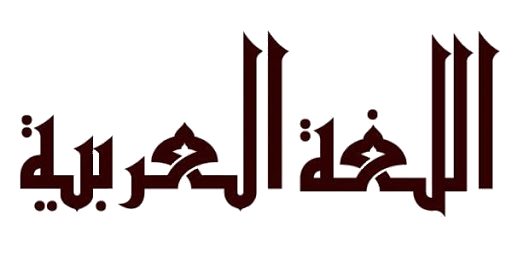

Langue
Découvrir un pays, c'est aussi découvrir sa langue. Le Maroc dispose de deux langues officielles, qui sont l'arabe et l'amazighe, mais le français est aussi parlé et compris par la quasi-totalité des marocains.
La langue amazighe, dont l'alphabet est le Tifinagh, est le patrimoine commun de tous les Marocains. L’arabe classique ou littéraire est utilisé dans le milieu administratif. La langue utilisée oralement par les marocains est la Darija (dialecte marocain). C’est d’un mélange de l’arabe, l’amazighe, le français et l’espagnol.
Pour vous mêler aux populations locales et profiter pleinement de votre séjour, ce sont certains mots en Darija qu'il vous faut maîtriser. Cela vous permettra de sortir du lot de touristes classiques et de montrer que vous faites des efforts dans le pays. Voici quelques expressions et mots qui vont vous aider tout au long de votre séjour au Maroc :
Mots Courants
| Français | Darija |
|---|---|
| Bonjour/Bonsoir | Salam/Msa Lkheir |
| Comment allez vous ? | Kidayr, Labas ? |
| Très bien, merci, et toi ? | Labas hamdollah, o nta ? |
| Pardon | Smahli |
| Bienvenue | Marhba |
| Au revoir | Beslama |
| Merci (Beaucoup) | Chokran (bezzaf) |
| Oui / Non | ah / La |
| Comment tu t'appelle ? | Chno Smitek |
Commerce
| Français | Darija |
|---|---|
| C'est combien ? | Bch'hal afak? |
| C'est un bon marché | Tamane mezyane |
| C'est moins cher! | R'khiss |
| C'est trop cher! | Ghali bezaf |
| Pouvez-vous baisser le prix | Nkass tamane Afak |
| Argent | Flouss |
| J'adore / je déteste | Aâjabni / Maâjabnich |
| Je ne fais que regarder | Ghir Tanchouf |
Directions
| Français | Darija |
|---|---|
| Ou est ...? / Comment aller à...? | Fin kayn ...? / Kifach namchi li ...? |
| Banque | Banka |
| Gare | Mahatta |
| Centre-ville | Ouasst lamdina |
| Hôpital | Sbitar |
| Tout droit | Nichane |
| Gauche / Droite | Lissar / Limane |
| Nord / Sud / Est / Ouest | Chamal / Janoub / Charq / Gharb |
| Route | Triq |
Horaire/Dates et jours
| Français | Darija |
|---|---|
| Quelle heure est? | Ch'hal f saâa |
| Quand? | Fouqach? |
| Hier / Aujourd'hui / Demain | Lbareh / Lyoum / ghedda |
| Lundi / Mardi / Mercredi / Jeudi | Tnine / Tlat / Larbaâ / Khmiss |
| Vendredi / Samedi / Dimanche | Joumouâ / Sabt / al Had |
Santé/Urgences/Sécurité
| Français | Darija |
|---|---|
| Je veux voir un médecin | Bghit nchouf Tbib |
| Appelez un medecin / ambulance | Âayat l Tbib / lambilance |
| Danger | Khatar |
| Au secours | Âatkouni |
| Je suis perdu(e) | Tlaft |
| Les toillettes | Twalita |
| Je me sens malade | Ana mrid |